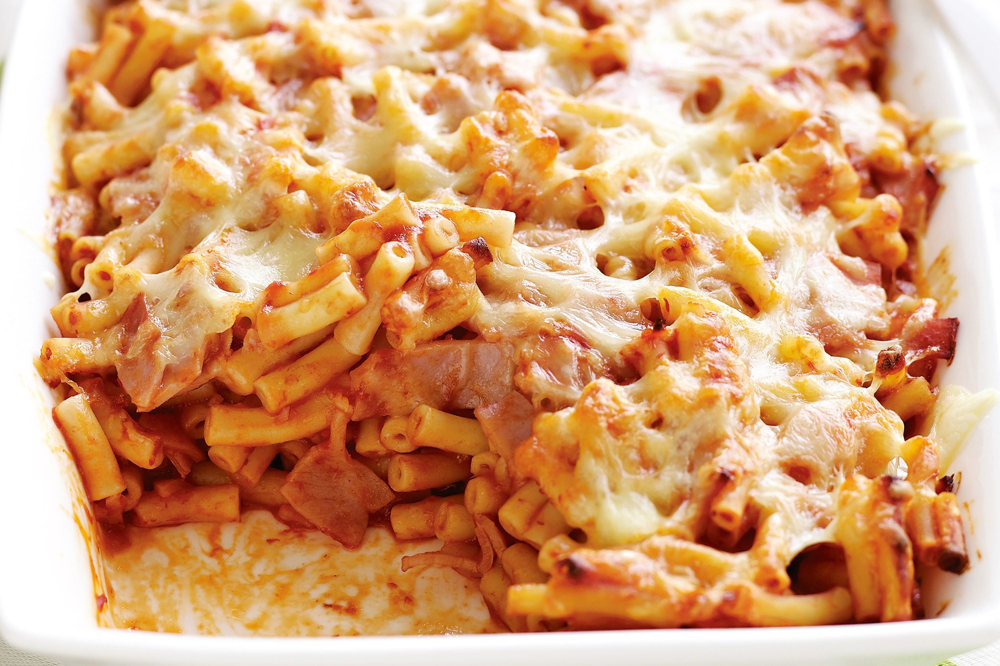

Filipino-style Baked Macaroni

Filipino-style Baked Macaroni is the ultimate pasta dish! With a sweet, meaty sauce, hearty noodles, and cheesy topping, it's hearty, tasty, and sure to be a crowd favorite. This recipe includes baked or no-bake instructions.
Ingredients:
- 1 package (16 ounces) small elbow macaroni
For the Meat Sauce
- 1 tablespoon canola oil
- 3 Filipino-style hotdogs, sliced diagonally
- 1 onion, peeled and diced
- 4 cloves garlic, peeled and minced
- 1/2 green bell pepper, seeded and chopped
- 1/2 red bell pepper, seeded and chopped
- 1 1/2 pounds ground beef
- 2 cups tomato sauce
- 1/2 cup tomato paste
- 1 cup banana ketchup, preferably sweet and spicy
- 1 cup beef broth
- 1 teaspoon sugar
- 1/2 teaspoon Italian seasoning
- salt and pepper to taste
For the Cheese Topping
- 1/3 cup butter
- 1/4 cup flour
- 3 cups milk
- 16 ounces Eden Cheese (or any quick-melting cheese), cubed
- 1 cup cheddar cheese, shredded
- 1/4 teaspoon ground nutmeg
- salt and pepper to taste
Instructions
- In a large pot over medium heat, bring about 4 quarts salted water to a boil. Add macaroni and cook 1 to 2 minutes less than package's directions. Rinse under cold running water and drain well.
For the Meat Sauce
- In a pot over medium heat, heat oil. Add sliced hotdogs and cook, stirring occasionally, for about 1 to 2 minutes or until lightly browned. Remove from pan and set aside.
- Add onions and garlic and cook until softened.
- Add bell peppers and cook until tender-crisp.
- Add ground beef and cook, stirring occasionally and breaking apart with the back of a spoon, for about 7 to 10 minutes until lightly browned. Drain any excess fat.
- Add tomato sauce, tomato paste, ketchup, and beef broth.
- Stir in sugar and Italian seasoning.
- Bring to a boil. Lower heat, cover and continue to cook for about one hour or until meat is fully cooked and sauce is thickened.
- During the last 10 minutes of cooking, add browned hotdogs. Season with salt and pepper to taste.
For the Cheese Sauce
- In a skillet over medium heat, melt butter.
- Add flour and stir well into a smooth paste. Cook, stirring regularly, for about 5 to 7 minutes or until golden (but NOT browned) and starts to bubble a bit.
- Gradually add milk to the roux, whisking vigorously to prevent lumps. Cook, whisking regularly, for about 2 to 3 minutes or until smooth and thick enough to coat the back of the spoon.
- Stir in nutmeg and salt and pepper to taste.
- Gradually add quick-melt and cheddar cheese, whisking regularly until melted. Cook until cheese sauce is thick but spreadable.
To Assemble
- Grease bottom and sides of a 9 x 13 baking dish with nonstick cooking spray and set aside.
- In a large bowl, combine macaroni and meat sauce. Gently toss together until well-combined.
- Transfer the pasta mixture to the prepared dish. Spoon cheese sauce on top, spreading across to cover the pasta completely.
- Bake in a 375 oven for about 20 to 25 minutes or until hot and bubbly. Remove from oven and allow to cool for about 15 minutes before cutting into serving portions.